| # | Clock | Beat | Do this | BRD |
|---|---|---|---|---|
| 1 | 0:00–0:30 | Frame it | Overview on screen as Priya. No clicks. | intro |
| 2 | 0:30–1:30 | One view of every case | KPI row → scroll to Upcoming hearings and due actions. | R1 · KEY |
| 3 | 1:30–2:30 | Same numbers, every audience | Dashboards → D1 tab → D2 tab. | R1 · KEY |
| 4 | 2:30–3:15 | One page per case | Search TM-2024-428 → case page (→ Case dashboard). | R1 · KEYR6 |
| 5 | 3:15–4:30 | Ask, and check every word | Ask Ferrero about this case → damages question → click [1]. | R2R3R4R6R10 |
| 6 | 4:30–5:15 | Compare two cases | Ask: compare TM-2024-428 and TM-2024-407. | R7 |
| 7 | 5:15–6:00 | Arabic in, Arabic out | Assistant → Arabic example chip (TM-2024-421). | R2R6 |
| 8 | 6:00–7:30 | Access follows the person | Switch to Omar → Overview → D1 → Ask Ferrero → first chip. | R5R8 |
| 9 | 7:30–8:45 | Every file accounted for, scans included | Back to Priya → Documents → open scan 157264. | R9R4 |
| 10 | 8:45–9:30 | Close | Golden set, tests, your cloud. Thank you. | R10R11 |
| Step 5 · type | What damages were awarded in TM-2024-428? |
| Step 6 · type | Compare the outcomes of TM-2024-428 and TM-2024-407. |
| Step 7 · click the chip | ما شروط التسوية في القضية TM-2024-421؟ |
| Step 8 · as Omar, first chip | What damages were awarded in TM-2024-428? |
Timing check: 6 min 29 s of talk at 135 words a minute + 2 min 30 s of clicks and waiting. Every figure was read from the running app on 12 Nov 2026.
| An answer takes longer than 30 s | Keep talking: “it’s reading the judgment and checking the tracker”. The ticked steps show progress. Past 60 s or an error: click New conversation and send once more (a failed turn is rolled back). Still stuck? Say “the network is slow here; this is the answer it gives” and show the screenshot from this script. |
| Dashboards blank, or “Dashboards are unavailable” | Skip step 3: “the same tiles you just saw on the Overview: it’s the same case data.” Don’t debug on stage. |
| “Ferrero is temporarily unavailable” | The start.cmd window was closed. Double-click start.cmd, wait about 20 s, reload. |
| Wrong person on screen | User card, bottom left → pick Priya Menon (or Omar Al Qahtani in step 8). |
| Someone asks why “today” is 5 November | “The demo data is frozen at 5 November so the figures match the test set; in production it’s the real date.” |
The key requirement: dashboards for every audience on one case model, so a chart, a case page and an answer never disagree.
Every statement cited to the paragraph it came from; when the files are silent, it says so.
Questions, answers, documents and scans in both languages.
Enforced in the data, not the prompt; a hidden case looks like a missing one.
Golden set and tests; runs on Bedrock or Foundry in your region.
| ID | BRD requirement | Step | What the room sees |
|---|---|---|---|
| R1 | Consolidated case dashboards Key requirement | 2, 3, 4 | Overview tiles = dashboards D1/D2 = DS-1 for the case; every audience, one case model |
| R2 | Plain-language questions in English or Arabic | 5, 7 | English question, English answer; Arabic question, Arabic answer, right to left |
| R3 | Every statement cited to document, page and section | 5 | Numbered markers open the quoted paragraph, file, section and SharePoint path |
| R4 | Answers only from the documents; no guessing | 5, 8, 9 | Cross-checks the tracker; says so when the files are silent; every file has a status |
| R5 | Respect document access | 8 | Omar (KSA) sees 9 open cases, not 37; dashboard filtered; UAE case hidden |
| R6 | Exact identifiers | 4, 5, 7 | Case numbers, file names and registration numbers kept exactly as written |
| R7 | Comparisons across cases | 6 | One answer, two cases, citations from both judgments |
| R8 | Resistance to prompt injection and misuse Say, don’t demo | 8 | The model never receives what the user may not see; off-topic requests are declined |
| R9 | Scanned documents searchable | 9 | Arabic scan read at 94%; a weak page flagged for review at 89% |
| R10 | Transparency of quality and cost | 5, 10 | “How Ferrero answered” steps and seconds; golden set; 77 tests |
| R11 | Run on your cloud, priced up front Say | 10 | Claude on Amazon Bedrock or Microsoft Foundry, in your region; cost sheet |
| ID | Dashboard | Audience and question |
|---|---|---|
| D1 | Legal Case Overview | Legal team: what needs attention? |
| D2 | Leadership Command | Leadership: does enforcement pay? |
| D3 | Intake & Triage | Legal Ops: keeping up with reports? |
| D4 | Infringers & Outcomes | Brand protection: next budget? |
| DS-1 | Case Detail | Everyone: one case, plus “Ask Ferrero” |
| Role (Entra ID group) | Cases and figures | Documents |
|---|---|---|
| Legal-UAE / Legal-KSA | own country | own country |
| Legal-MENA | EG, JO, KW, QA, OM, TR, IN | same |
| Legal-Ops, Leadership | all | all |
| Procurement | all | none |
Requirement IDs and wording follow the requirements map in the Ferrero technical proposal (R1–R11). Dashboard scope comes from the demo pack’s Dashboard_Specs, and the roles from its Semantic_Model.
What you’re about to see is the working product, live. The data is synthetic: the company name and the trademarks are fictional stand-ins for yours. It does the two things your requirements ask for: one consolidated view of every case, and an assistant that answers from your own case files, with sources, in English or Arabic. The app’s ‘today’ is fixed at 5 November, so the figures stay stable. I’ll call out the requirement numbers as we go.
This is R1, the key requirement: one view instead of nine country trackers. I’m Priya, Legal Operations, so I see all 120 cases. 37 are open, 8 have a hearing in the next 30 days, and 4 actions are overdue. They sit at the top of this list, each with the counsel who owns it. And the money: 64 percent of what was awarded or settled has been recovered, an 88 percent win rate on decided cases, and 5.8 million dirhams of legal spend.
Bridge: The same figures, for each audience, live in the dashboards.
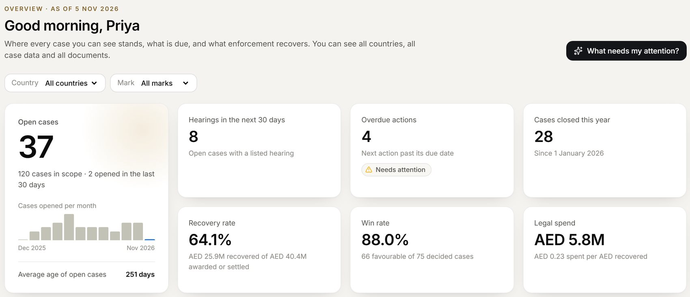
You asked for dashboards for each audience. These are the four from the specification, embedded right here. D1 is for the legal team: the same 37 open, 8 hearings and 4 overdue as the overview, because it is the same case model. D2 is the leadership view: 152 million dirhams claimed, 40 million awarded or settled, 26 million recovered. D3 covers intake and triage, D4 infringers and enforcement outcomes, and DS-1 is the case drill-through.
Bridge: Let’s open one case.
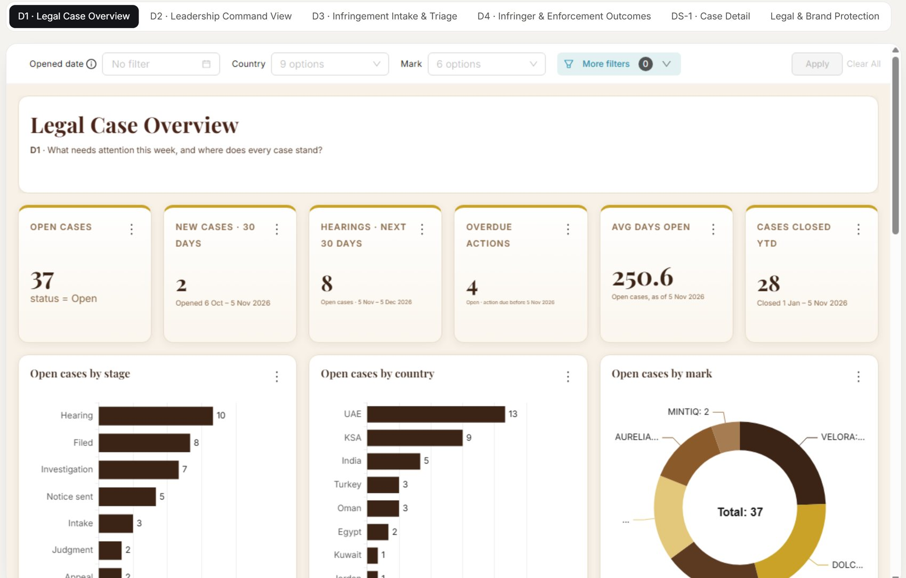
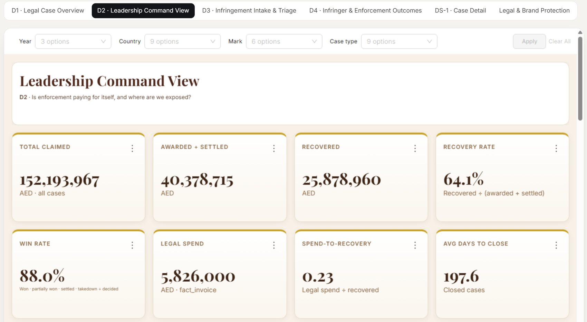
Every case has one page: the case drill-through. VELORA against Zahrat Al Sahra Trading, in Dubai: won. 3.3 million claimed, 2.3 million awarded and fully recovered. Here’s the timeline, the counsel spend, and every document on file, each with an honest status: one is searchable, three are in the catalogue but not yet in the library. ‘Case dashboard’ opens this same case as a dashboard, with the same figures.
Bridge: But what does the file actually say?
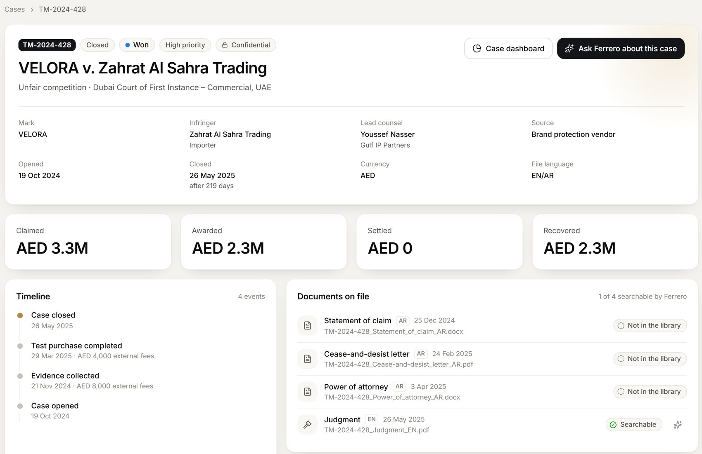
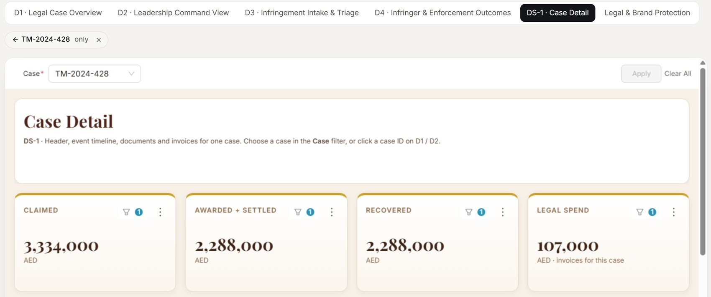
While it works: Now the assistant, in plain English. You can watch what it does: it searches this case’s documents and checks the case tracker, and it only ever sees what Priya is cleared to see.
When the answer lands: 2,288,000 dirhams. Every statement carries a number; click it, and there’s the exact paragraph, the operative part of the judgment, with the file and its SharePoint path. That’s R3: a lawyer checks it in one click. The last line cross-checks the case tracker, and they agree. If they didn’t, it would show both and name each source. And when the files don’t hold the answer, it says so instead of guessing. That’s R4.
Bridge: It works across cases too.
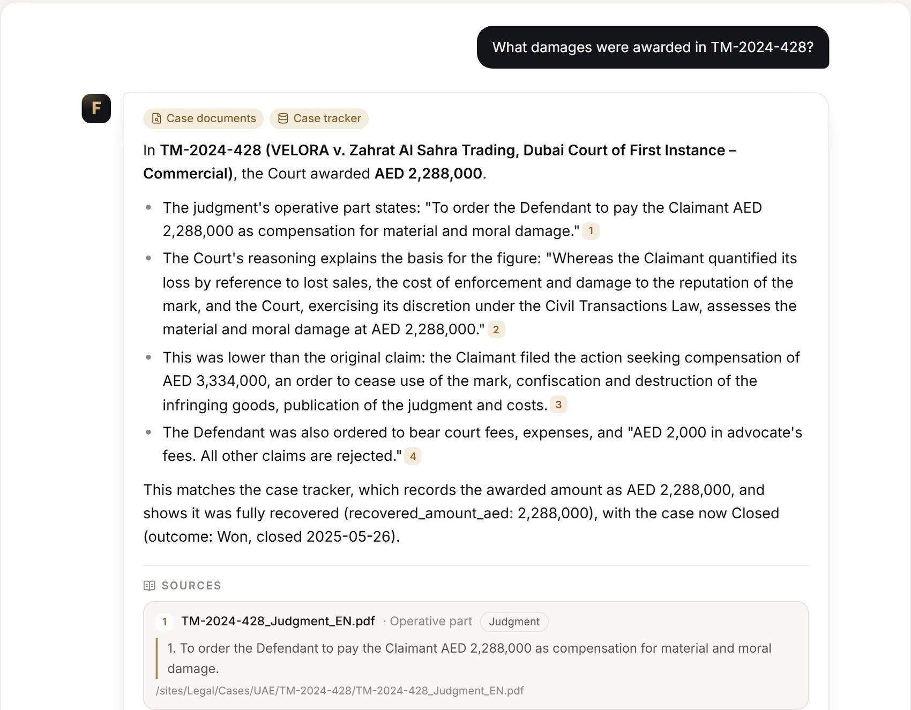
R7 is comparisons across cases. One question, two cases: it reads each case’s files and puts the evidence side by side. One was won; the other was dismissed, and the judgment says why: no notarised test purchase, no proof of sale in the UAE. Normally that means reading two files side by side.
Bridge: And in Arabic.
R2 also means Arabic as an equal. Same assistant, an Arabic question about a settlement: the answer comes back in Arabic, right to left, citing the Arabic agreement: 49,000 dirhams, sixty percent within 14 days and the rest within 60, the stock destroyed within 30 days. Case and registration numbers stay exactly as written. That’s R6, exact identifiers.
Bridge: So who gets to see all of this?
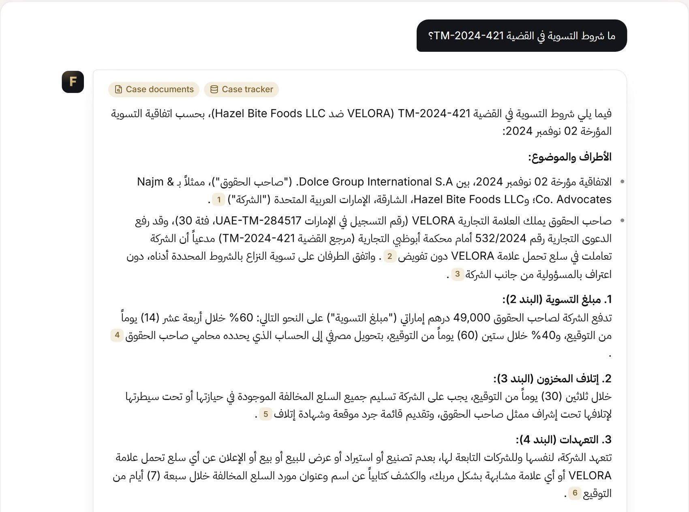
R5, access. I’m now Omar, litigation counsel in Saudi Arabia. Every number changes: 9 open cases, not 37, only KSA. The dashboards apply the very same rule. Now I’ll ask about the UAE case we just opened… No figures, and it won’t even confirm the case exists. That’s by design: access is enforced in the data, not in the prompt. The model is never handed what Omar can’t see, so there’s nothing to leak, however the question is phrased. That’s our answer on R8, misuse. And Procurement sees the case figures but no documents at all.
Bridge: Back to Priya, and the files themselves.
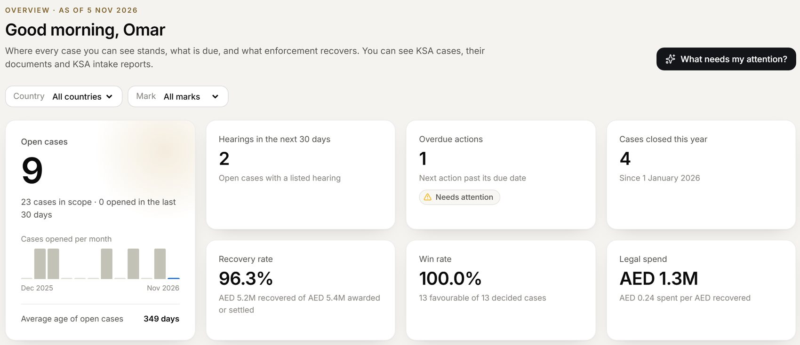
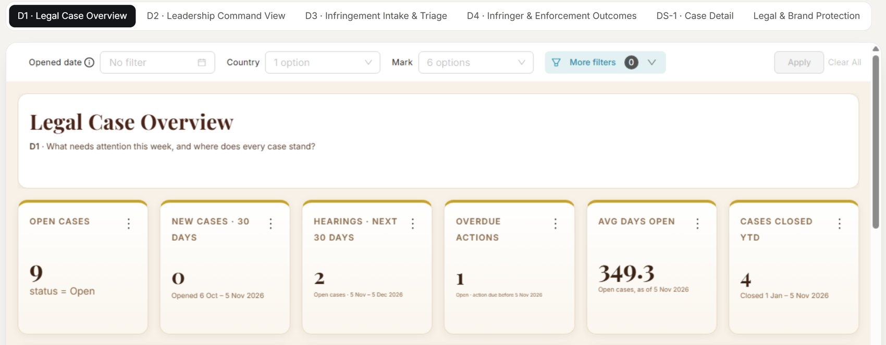
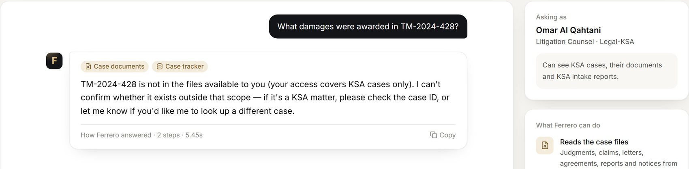
R9, scanned documents. Every file in the libraries is accounted for: 109 searchable, password-protected files listed but never opened, nothing silently dropped. Scans are read page by page with text recognition. Here’s an Arabic customs seizure notice: the scan on the left, the recognised text on the right, read with 94 percent confidence. A page that reads poorly is flagged for a person to check, not trusted blindly. In this environment 37 scans are still being processed; in production, text recognition takes seconds per page.
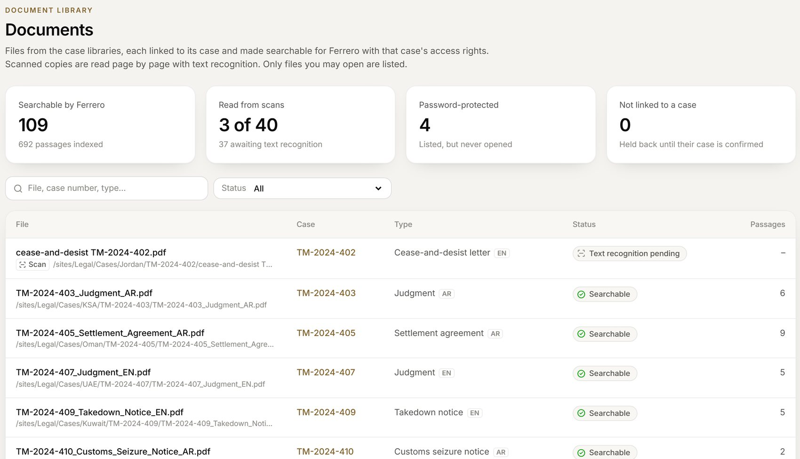
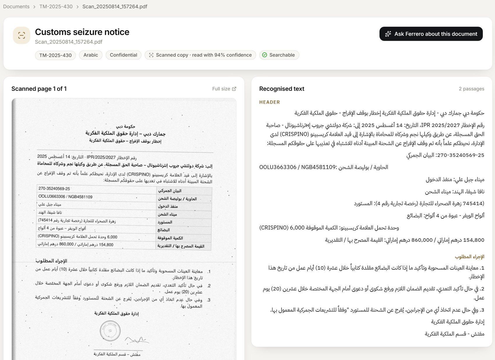
Two last requirements. R10, transparency: every answer shows the steps it took and how long it took, and the assistant is scored against a 30-question golden set, in English and Arabic, on documents and case data, plus access probes, with 77 automated tests behind it. R11: it runs in your cloud: Claude on Amazon Bedrock or Microsoft Foundry in your region, with Entra ID sign-in, your SharePoint libraries, and dashboards in Power BI or Superset. Same code, same access rules. Every case in view, every answer cited. Thank you.
No. It is synthetic but consistent across every table and file: 120 cases, 9 countries, 6 marks, 45 infringers, 150 files (78 Arabic). The real portfolio replaces it at kickoff; nothing else changes.
Claude (Sonnet 5) on Amazon Bedrock in this demo; the same code runs on Microsoft Foundry. It runs in your own cloud account and region under enterprise terms, with no training on your data. The exact terms are part of the week-1 hosting decision.
The dashboards follow the BRD spec on the same case model. Superset is what this build uses; Power BI is the alternative (the measures are already in the data pack). The BI platform is a week-1 decision.
Every page gets a confidence score. Below 80% the document is not indexed; below 90% the page is flagged for review. The viewer shows the scan beside its text, and answers say when they rely on a scanned copy.
Ferrero gives both and names each source; it never silently picks one.
Each person’s role (an Entra ID group in production) decides which cases they get. The assistant and the dashboards only ever receive those rows and documents, so a hidden case looks exactly like a missing one.
It is measured on a 30-question golden set (25 document, 5 case-data; 22 English, 8 Arabic) plus 3 access probes. The full scored run is the gate before UAT, and Legal adds its own questions during UAT.
Access is enforced outside the model, so a planted instruction cannot unlock hidden cases, and documents are treated as evidence to quote. The production build adds the input guard and content filter from the proposal.
Indicative plan: live in 5 weeks, handed over in 6. Week 1 decides the hosting region, where Claude runs and the BI platform.
| Overview tile | Priya (Legal-Ops) | Omar (Legal-KSA) |
|---|---|---|
| Cases in scope | 120 | 23 |
| Open cases | 37 | 9 |
| Opened in last 30 days | 2 | 0 |
| Hearings in next 30 days | 8 | 2 |
| Overdue actions | 4 | 1 |
| Closed this year | 28 | 4 |
| Recovery rate | 64.1% | 96.3% |
| Win rate | 88.0% (66/75) | 100% (13/13) |
| Legal spend | AED 5.8M | AED 1.3M |
| Average age, open cases | 251 days | 349 days |